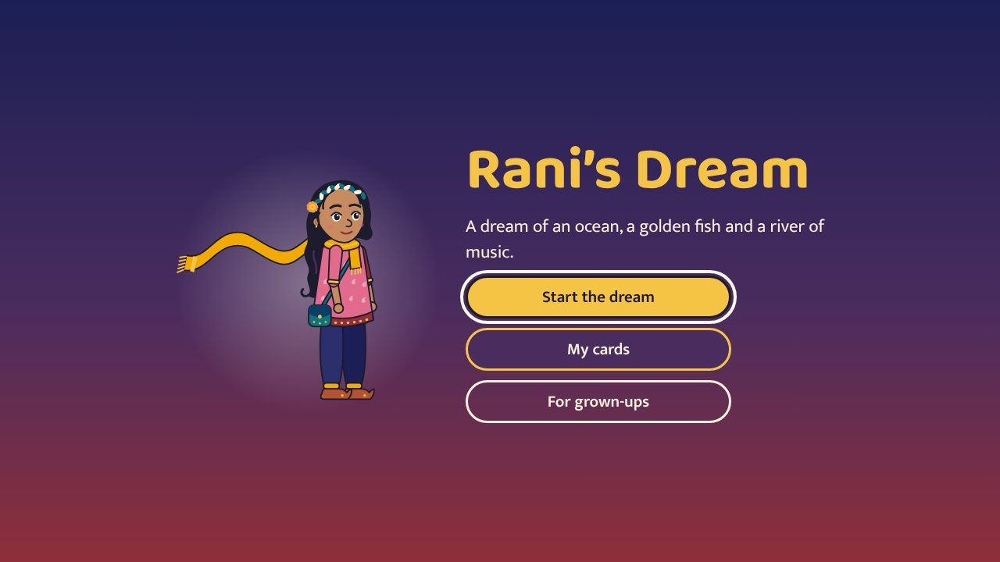
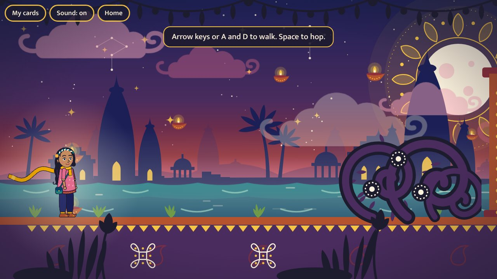
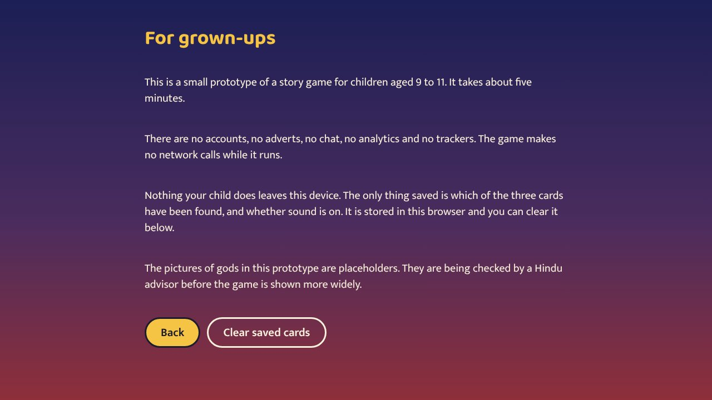

A one-level story game for children aged 9 to 11, about a girl who falls asleep and dreams of an ocean, a golden fish and a river of music. It is a prototype, and every picture of a god in it is waiting for a Hindu advisor to check it.
My role
I designed the game and directed the build.
What I did myself
The research into whether the idea was viable and what else was in the market, which I did outside Claude. Then the design, the rules for how gods appear in the game, the testing and the decisions below.
What others owned
A Hindu advisor has not reviewed it yet.
Status
A prototype of one level. I tested it and iterated on it as I built it. It has not been tested with children yet.
The problem
This is one level of a story game for children aged 9 to 11 that draws on Hindu stories. The stories are told in different ways and the gods are sacred to many families, so the pictures and the words both need care. The game follows a short set of rules about how the gods appear, and the decisions below are mostly about those rules.
Before I built anything I researched whether the idea was viable and what was already in the market. I did that outside Claude.
The level is a dream about an ocean, a golden fish and a river of music. It takes about five minutes.
The girl in the story is called Rani. She falls asleep, walks along a path of lotus leaves, and meets three figures from the stories on the way. Along the way she wins three cards, and her scarf gains a small patch for each one.
What it looks like
The title screen

Everything on screen is an original drawing. A script generates the artwork as separate layers, so the sky, the temples, the clouds, the water and the path can scroll at different speeds. The motifs come from living traditions, such as kolam floor drawings, jali screens, Madhubani painting and Warli figures, and the end screen credits each one.
The first part of the level. The dark tangle of vines is the first obstacle

I have left out the screens that show the gods. Those drawings are placeholders until they have been reviewed.
Decisions
Gods are met, never played or fought
Chose
Rani meets the gods and never controls them or fights them. In the first encounter the god waits at a gate and does not move. Rani removes the obstacle herself, one knot at a time, and the god's card is her reward.
Why
The card says the tangle came loose when Rani was patient and tried. I have asked the advisor to confirm that it is acceptable for the child, and not the god, to clear the obstacle.
Faceless silhouettes and a different line for sacred figures
Chose
The two gods in the level appear as seated silhouettes with no faces. The fish avatar has a plain friendly eye. Gods and avatars are drawn with a heavy gold-and-ink double line, taken from Madhubani painting, and Rani has only a fine ink line.
Why
It means sacred figures read as sacred without any words. Whether it is respectful is one of the questions I have put to the advisor.
Say that stories are told in many ways
Chose
The fish card begins with "This story is told in many ways". No scripture is quoted and no verse is attributed anywhere. What the fish says to the man is my own wording, and the review sheet says so.
Why
Older tellings do not name the fish as Vishnu and later ones do, and the rope in the flood scene is a plain rope in some tellings and a serpent in others. I have listed both as open questions for the advisor instead of settling them myself.
A plain five-note scale
Chose
The music encounter is a short tune on five lotus flowers, played back twice. The notes are a plain five-note scale and no raga is named or claimed.
Nothing leaves the device
Chose
No accounts, no adverts, no chat, no analytics and no trackers, and no network calls while the game runs. Fonts are bundled. The only things saved are which cards have been found and whether sound is on, and there is a button to clear them.
Results
1 levelabout five minutes, three encounters and three cards
About 1.2 MBfor the whole production build
4.5:1 or bettercontrast for every text and background pair in the game, checked by a script in the project
18 pxthe smallest text, including text inside the card and cutscene artwork
The whole game can be played from the keyboard. On a touch screen there is a pad for walking and a separate jump button, so a child can hold one and tap the other at the same time. Jumps are forgiving: the game gives a short grace period after Rani leaves the edge of a leaf, and it accepts a jump pressed just before she lands. With reduced motion switched on, the bobbing, the drifting clouds, the pulses and the card flip stop. Nothing flashes.
There are no usage numbers because nobody outside the project has played it. It has not been tested with children, and the review sheet says it should not be shown to them until the advisor has been through it.
The note for grown-ups

What went wrong
Cream text on terracotta failed
One colour pair I wanted to use, cream text on terracotta, comes to 4.41:1, which is just under the 4.5:1 that I set myself as the bar. The contrast script caught it. The game now never puts cream text on terracotta.
The gods were drawn and written before anyone had checked them
The artwork and the card text for the gods were made before a Hindu advisor had seen any of it, so all of it is placeholder. I have put every depiction and every sentence a child can read about a god into one review sheet, 25 items in all. The sheet says that nothing in the game should be shown to children before that review.
What I would do next
The advisor review comes first. The sheet asks about each depiction, such as whether a fish-only form for the fish avatar is acceptable and which way the trunk should curl on the silhouette. It also asks about each sentence in the cards and cutscenes, including how to explain an avatar to a nine-year-old, and it asks someone to check the Devanagari spellings.
After that it needs testing with children aged 9 to 11.